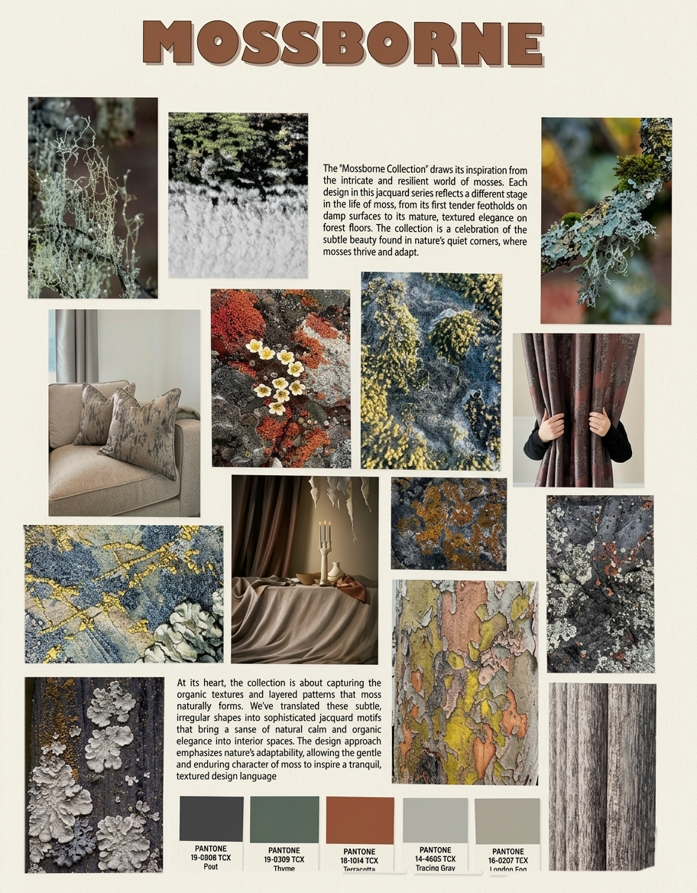
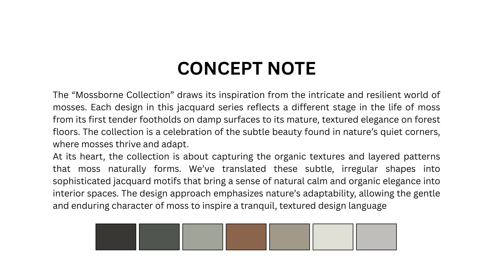
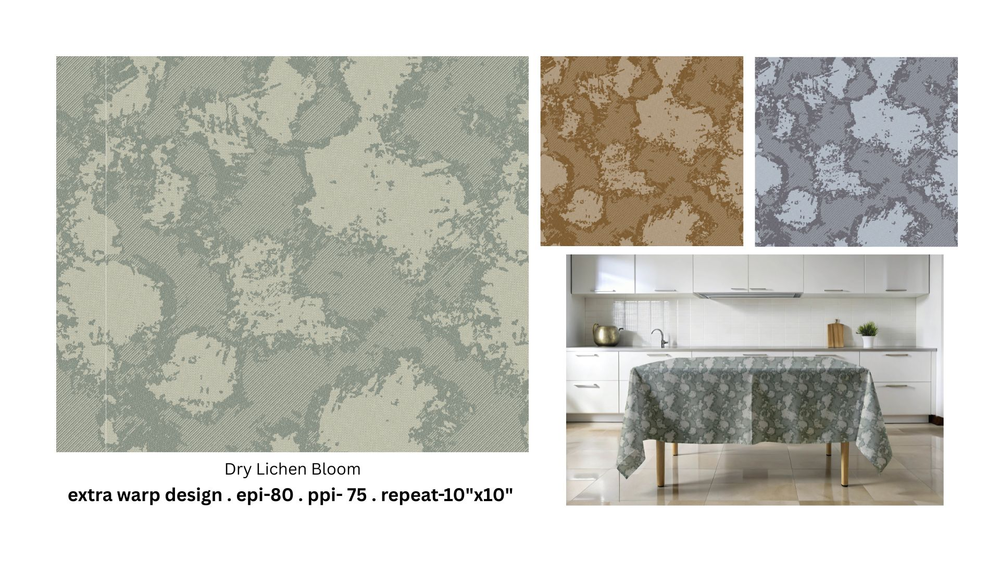
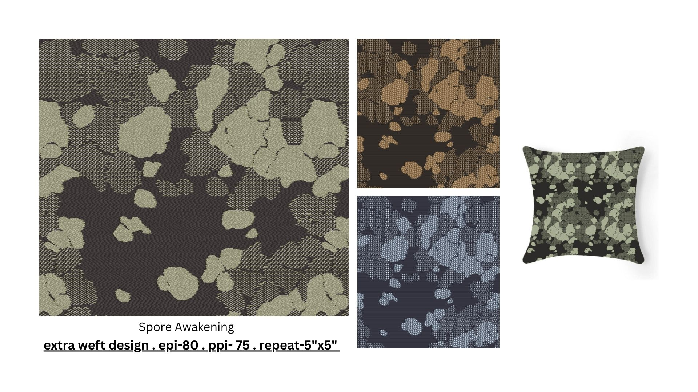
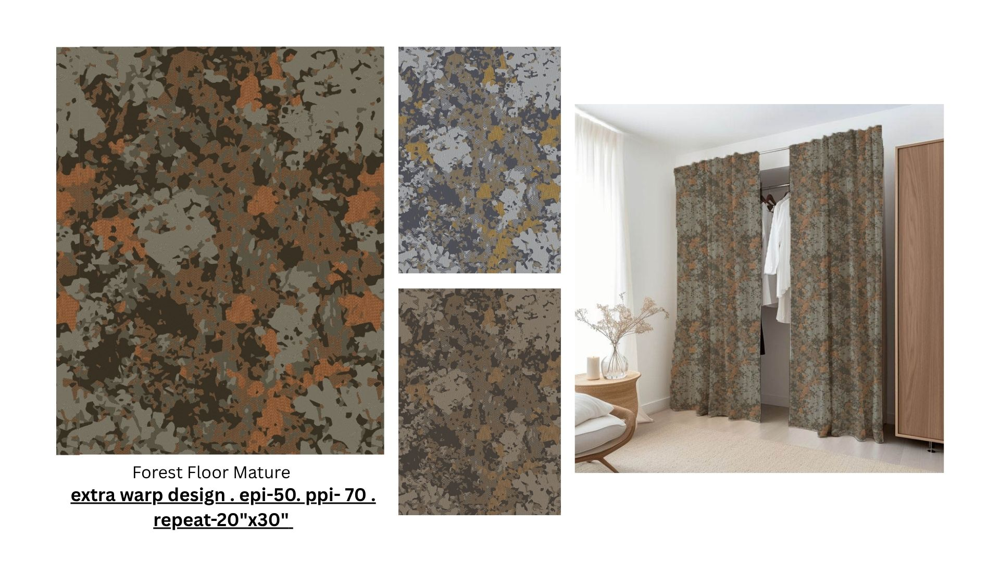
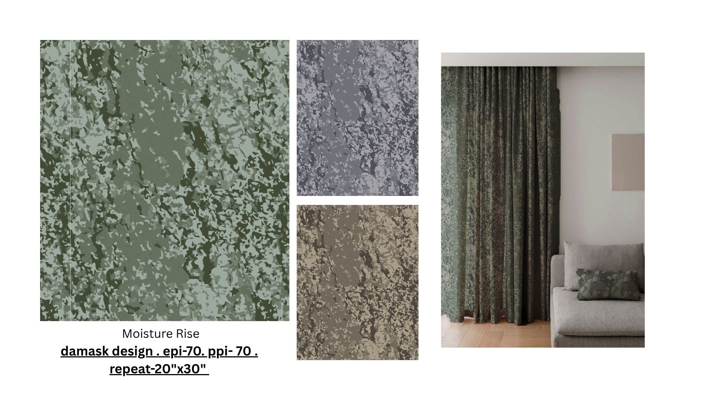
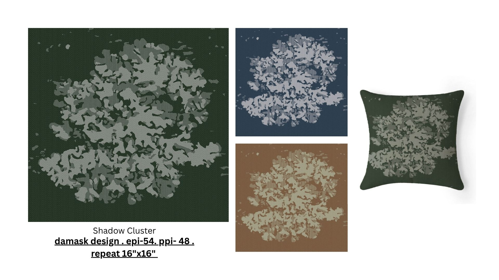
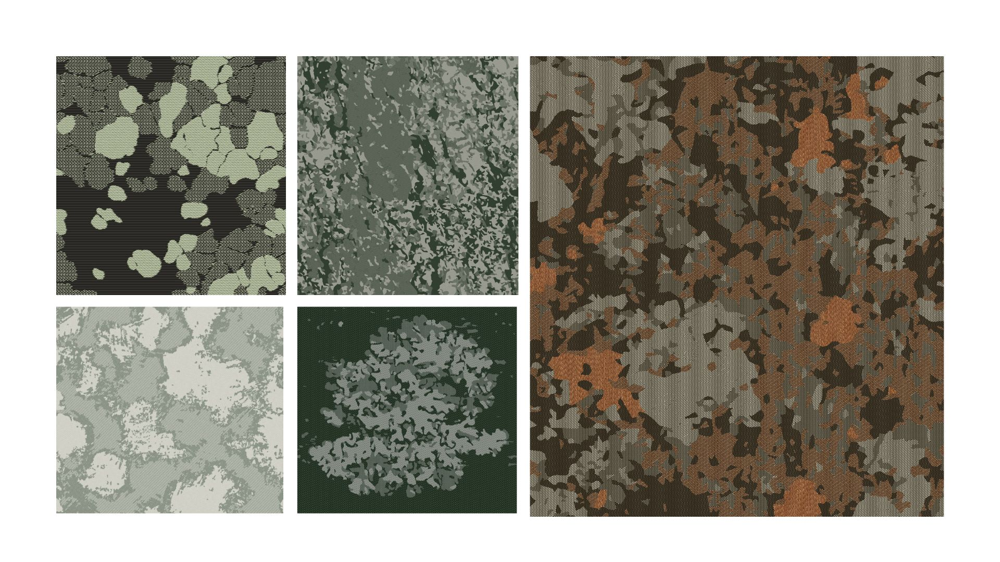

Jacquard Textile Collection
← Back to PortfolioThis project is one of my first jacquard assignments, where the brief was to develop a collection consisting of 4–5 designs based on a specific concept. I chose to draw inspiration from organic surface growth, translating natural textures into structured textile patterns suitable for furnishing applications.







